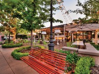
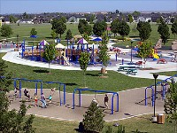

Meridian at a Glance
- Meridian was established in 1891
- The town was originally called Hunter
- It was renamed in 1902 and became incorporated in 1903
- Meridian is the second largest city in Idaho
- It is one of the fastest-growing cities in the United States
- It has an estimated 1,000 percent increase in population since 1990
- Population: 97,008 (2018 Census data)
- Median age: 36
- Median household income: $68,131
Meridian Picture Gallery
 Meridian News/Current Events
- Idaho's
population boom leads U.S.; 8 cities among fastest-growing in nation
Idaho’s population growth from 2019 to 2020 led the country, and eight of the state’s cities are among the fastest-growing in the U.S., according to data from the U.S. Census Bureau.
- Bernt
announces Meridian City Council re-election campaign
Meridian City Council President Treg Bernt announced week his intention to run for re-election in 2021.
- Meridian
school custodian saved after having a heart attack in a classroom
Three fast-acting staff members at St. Ignatius School in Meridian helped save custodian Jeff McDonnell's life. He says 'thank you' will never be enough.